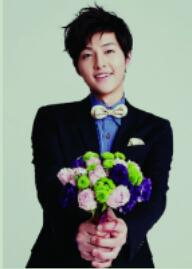

姓名:宋仲基
生日：1985年9月19日
宋仲基，1985年9月19日出生于韩国大田广域市，韩国演员、主持人。2008年出演电影《霜花店》进入演艺圈。2009年在音乐节目Music Bank中担任主持，后在艺能节目《Running man》中担任固定嘉宾。2010年出演电视剧《成均馆绯闻》具龙河一角，获得KBS演技大赏最佳人气奖。2011年电视剧《树大根深》中饰演青年世宗，获得SBS演技大赏PD奖。宋仲基于2013年8月27日入伍，于2015年5月26日退伍。2016年2月主演KBS水木剧《太阳的后裔》，凭借该剧获得第52届百想艺术大赏电视部门最佳男演员提名。